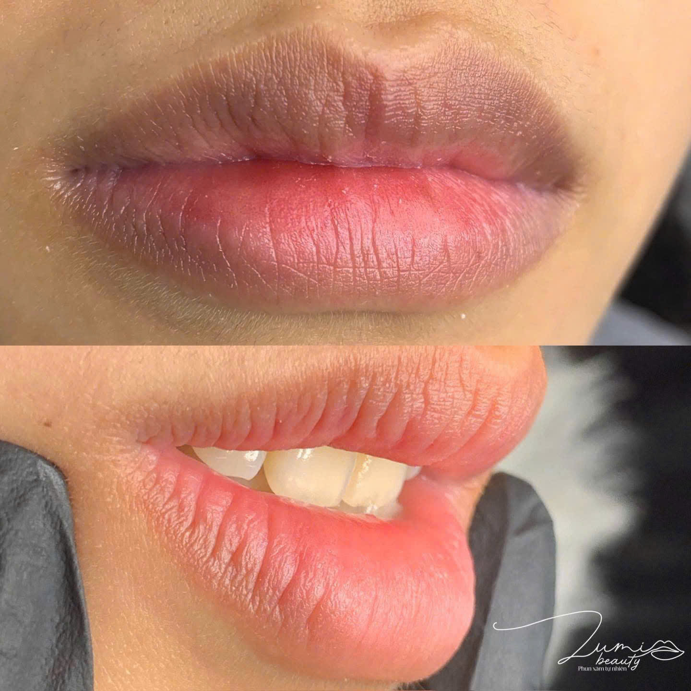
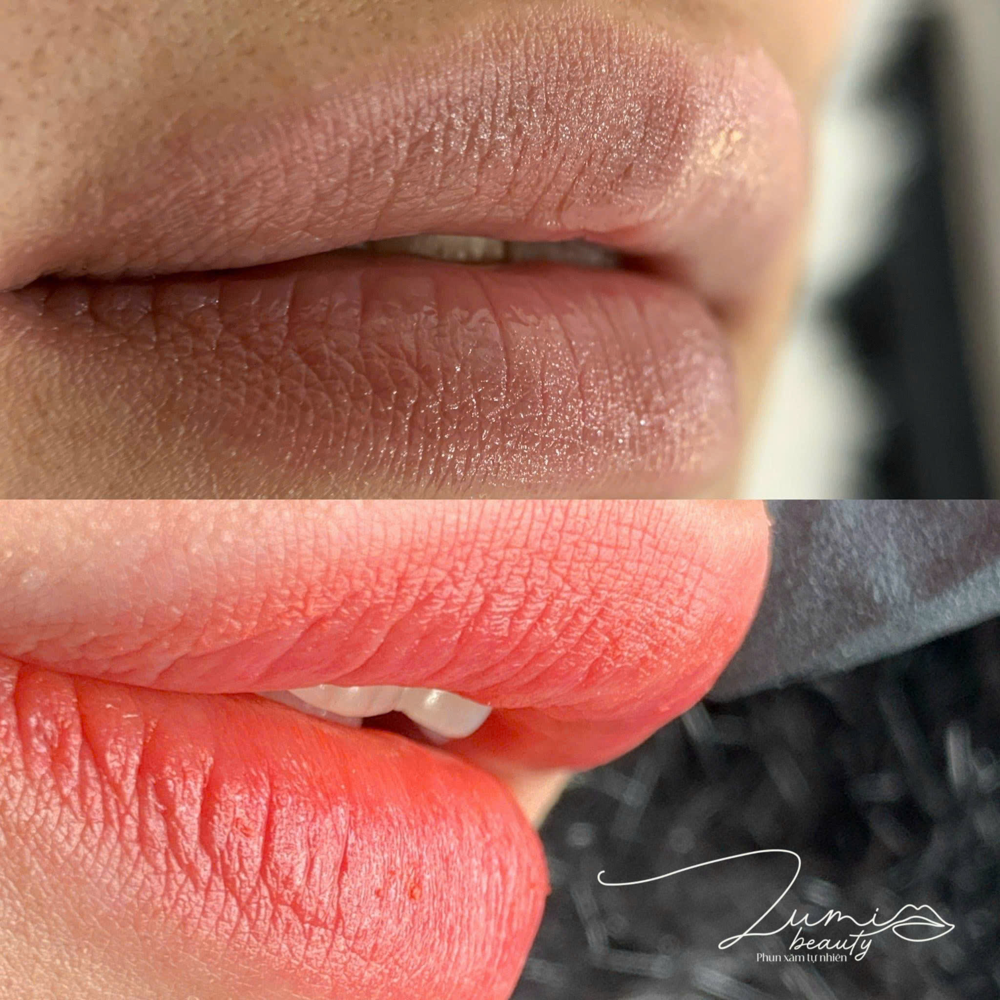
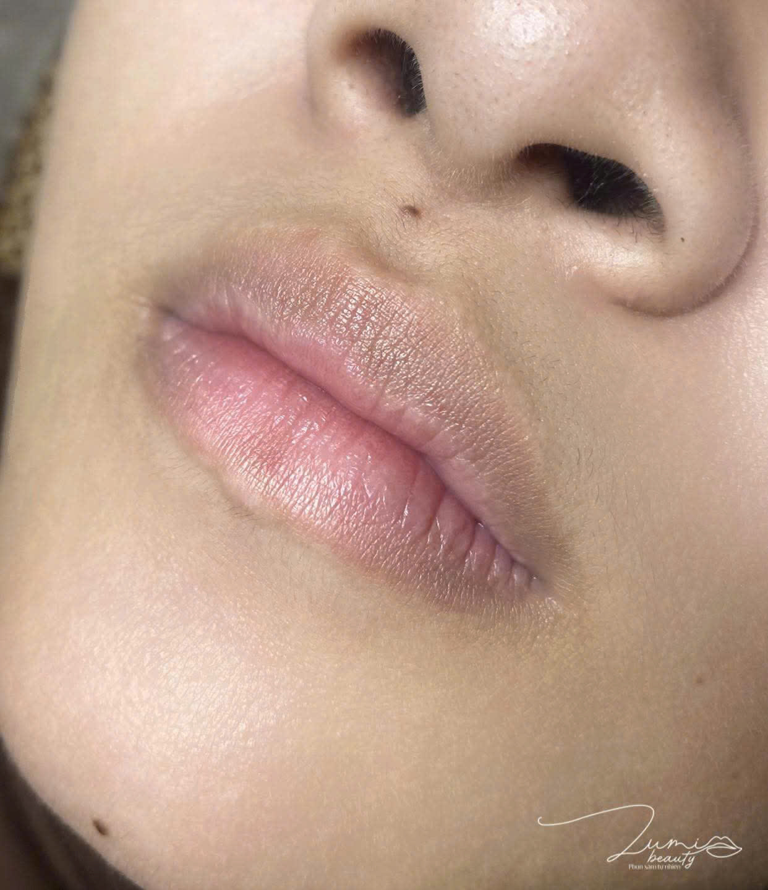
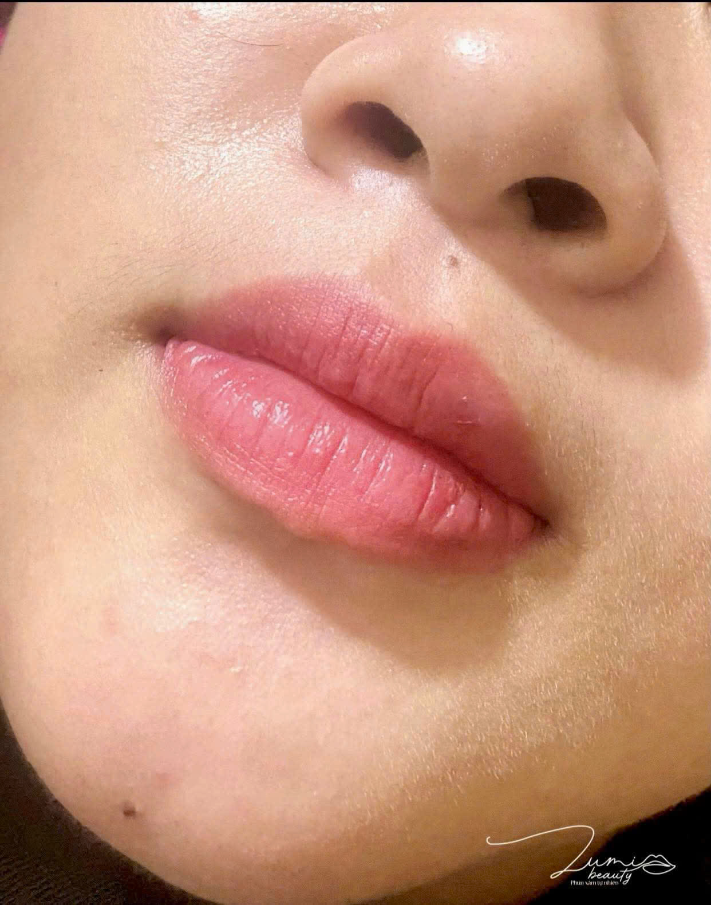

Rất nhiều chị sau khi phun môi về nhà, đến lúc môi bong thì… hoảng hồn:
"Ủa sao môi người ta bong ra hồng xinh như kẹo, còn môi em thì xỉn xỉn tái tái vậy trời? Có hư không?" 😭
Nếu chị đang lo lắng giống vậy thì bình tĩnh nha.
Lumi Beauty cam kết: Môi bong ra xỉn – loang – đục là HOÀN TOÀN BÌNH THƯỜNG.
Hành trình này ai cũng phải trải qua. Điều quan trọng là chị cần hiểu vì sao và khi nào môi mới đẹp thật sự.

1. Mỗi Người Có Nền Môi Khác Nhau – Không Thể So Sánh
Nền môi giống như "màu gốc" của đôi môi. Dù cùng một màu mực, kết quả bong sẽ hoàn toàn khác nhau.
✨ Nền môi thâm – sậm – nhiều melanin
- Bong ra hơi đục
- Màu xỉn nhẹ
- Không thể tươi ngay
✨ Nền môi hồng sẵn – sáng màu
- Bong thấy màu rõ hơn
- Nhìn tươi và mịn hơn
- Lên tông đẹp hơn ngay

2. Giai Đoạn Bong Chưa Phải Màu Thật – Đừng Vội Lo
Ngay sau phun, hạt mực nằm tách trên bề mặt da. Khi bong, mực:
- Chưa kịp nở hết
- Chưa liên kết sâu
- Nhìn hơi tái hoặc hơi đục
Đây là phản ứng HOÀN TOÀN ĐÚNG của da môi.
Thời điểm môi bắt đầu đẹp thật: Tuần 3–4
Khi đó:
- Mực liên kết
- Trung hòa với nền môi
- Màu trở nên tươi – mịn – đều
👉 Giai đoạn bong KHÔNG phản ánh kết quả cuối cùng.
3. Môi Thâm Bong Ra Đục Là Điều Bắt Buộc
Môi thâm phải khử bằng:
- Mực cam
- Mực đỏ
- Hoặc mực trắng
Các màu này chuyên để trung hòa sắc tố đen → nên giai đoạn đầu môi:
- Hơi đục
- Không trong
- Không hồng liền
Nhưng chỉ sau một thời gian, khi mực tan và da phục hồi:
👉 Môi sẽ hồng hơn – sáng hơn – tự nhiên hơn rất nhiều.
4. Bao Lâu Môi Mới Đẹp Hẳn?
Thông thường:
⏳ 4–6 tuần là lúc môi ổn định và lên màu thật.
Thời gian này chị chỉ cần:
- Dưỡng ẩm đều
- Tránh bóc da chết
- Hạn chế ăn cay, uống nóng
- Không soi gương quá nhiều (đỡ stress 😆)
Màu sẽ tự sáng lên!
5. Khi Nào Cần Dặm Lại?
Nếu sau 6–8 tuần:
- Môi vẫn hơi xỉn
- Chưa đều màu
- Chưa lên chuẩn tone
→ Lúc này thợ sẽ kiểm tra lại nền môi và dặm mực lần 2 để hoàn thiện 100%.
📋 Tóm Tắt Nhanh Cho Chị Dễ Nhớ
🌸 Môi thâm bong ra xỉn là bình thường
💧 Giai đoạn bong không phải màu thật
⏳ Chờ 4–6 tuần để màu ổn định
💋 Dặm lần 2 để môi chuẩn sắc – căng mọng – hồng hào
💖 LỜI NHẮN TỪ LUMI BEAUTY
Nếu môi chị vừa bong mà chưa đẹp – đừng lo, đừng sợ, đừng so sánh.
Mỗi đôi môi đều có hành trình riêng để "nở hoa".
Chỉ cần thêm chút thời gian, chị sẽ thấy môi mình cũng rực rỡ và tự tin chẳng kém ai đâu! 🌷✨
🌟 Muốn phun môi đẹp – an toàn – tự nhiên tại Lumi Beauty?
➡️ Đặt lịch ngay tại: lumibeauty.studio
Hoặc inbox fanpage để được tư vấn miễn phí 1:1.
📞 Hotline: 0364759261
📍 Địa chỉ: Võ Quý Huân, Khu Đô Thị FPT City, Da Nang, Vietnam